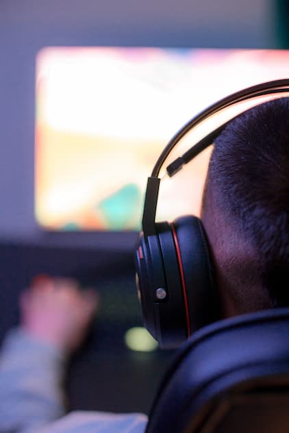
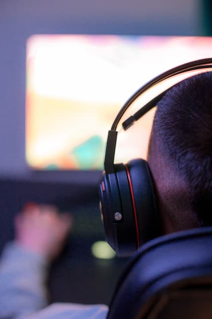

PERIPHERALS
Peripherals often go unnoticed or unimportant, but nothing is further from the truth and not only for gaming, but also for the durability and comfort that they can provide. Having good peripherals allows you to have one of the best experiences and enjoy every activity you want to do on your PC. The mouse is an important part of the peripherals, with its help you can freely navigate the windows of your computer. It makes the actions you want to do easier, you should keep in mind that a good mouse will help you feel comfortable and easy to use, it is advisable to buy a good mouse since it can last longer and be more comfortable than a cheap one and that you will have to change in a couple of months.

There are many types of keyboards, for each type of taste. There are membrane keyboards, mechanical keyboards, ergonomic keyboards, flexible keyboards, each one with different characteristics that accommodate the user's preferences. The most used are membrane keyboards and mechanical keyboards, the latter are the most used in the gaming world. When buying a keyboard, check that each key works and that its reaction time is fast since some keyboards become saturated when pressing several keys at the same time and this may be a problem when activating certain system commands and also when playing a video game.
 

Headphones are basic for video game lovers, the better the quality of the headphones you buy, the better the experience will be in the video game since you will be able to capture details that would be impossible to capture with low-quality headphones or headphones that do not isolate the sound of the abroad. Having good headphones will not only be helpful for video games, it will also be of great help to have a great experience when listening to music or watching movies on your computer. Some very good headphones can last you for years, you should keep in mind that some headphones may come with a microphone and others do not, check the quality of the microphone since on some occasions they can cause interference when making calls or video calls through your computer, always check the quality of each part of your headset, from the material of the cable, the ports and the earmuffs, since some can become uncomfortable for the user.